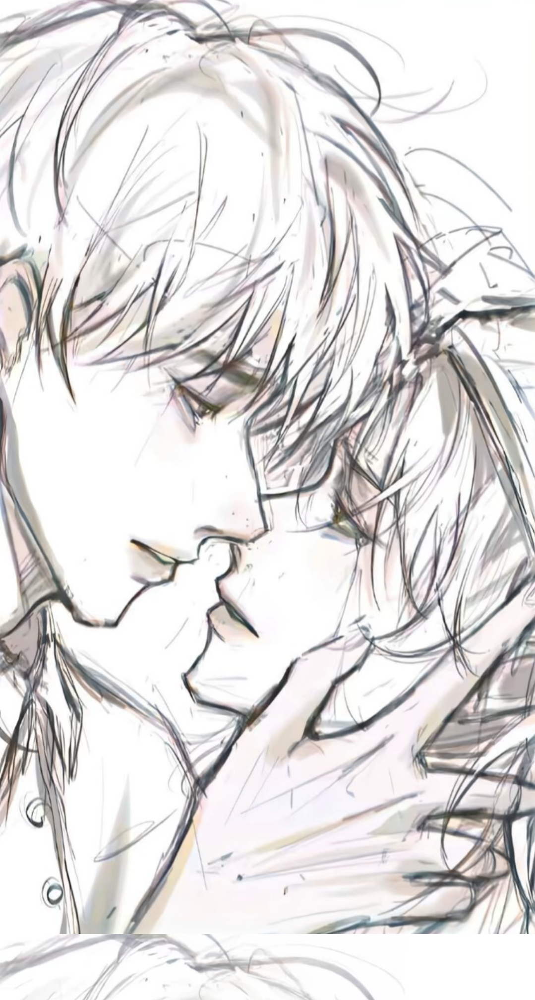

老子要炸了这个世界！
今天我听了歌，什么歌，没有你我心如刀割
花开花落，走过一季又一季，时光如沙漏般倒流，倒带般映出那些画面，兜兜转转，还是回到了原地，沿着这条熟悉的路走，脑海中总是会浮现你的身影，偶尔有风吹过，掺杂的味道，总是残留在你走过的路，头顶上空的枝叶，抵挡着阳光的入侵，为寂静的小巷子，保持着该有的阴暗，虽然，天空的颜色很美，却掩饰不着内心的憔悴，我带着和夜一样的情绪，依然在沉默中逃避。 那片蓝色的天空，像是城市上空中，浮现了许多奢华的光彩，走在没人的街头，是寂静和凄凉，然而有些迷惘，最终，一切都归还回原点，街角两旁的花儿已凋谢，但想念却永不停息，望着那些离去的背影，想去寻找你遗失的足迹，抬头仰望，原以为是蓝色的天空，现在都已变了颜色，变得失去光彩，原以为那繁华的街市，现在早已变得寥寥无人，而留下的人，却变得麻木冷淡，失去了他们最活力的一面，街角的空虚，就如同我的情人。 等待和惦记没改变，虽然微笑，装得一切安好，只有自己明白，装得再好，也掩埋不了内心的伤痛，你不懂我的世界，是多么的孤寂，那种孤独夜夜陪伴，是撕心裂肺的痛，只有一个人默默承受，而原本以为，你早已淡忘了那些前尘，你却在电话中说想念，说往事还迟迟的停留在那里，不能忘却，或许是我们都再也无力，去诉说那尘封已久的往事吧！最终，还是我们都走的太匆忙，对于那些已经远离的过往，我们只是记在心里。 这个宁静的夏日，阳光依然去照耀那片，已经变得无色的天空，最终，时间的轮回，我们只是爱了整整一个曾经，流光年华，追着时光惦念我们走过的路，流过的泪，笑过的脸，我们还是以分离作为结局，爱的只是个曾经，是一场注定失落的悲剧，你我不知道，该如何延续下一个花开的海岸，看着天上云朵轻轻飘过，我低头叹息，无数次跌落漫漫长河，曾经，我在情感里很放肆，现在才知道那种放肆，其实就是一场梦，当梦醒来时，依稀还记得，那些记忆，凄乱了无数个不眠之夜，把自己变得这么的不解情意。 现在，七月的阳光，在肆意挥洒体温，我们都爱到深处，才会领悟其中的感受，当一切的刻苦铭心，在岁月的饶恕下渐渐模糊，只能学会饶恕自己，孤单只是情绪泛滥，过去的倾心是一场烟花，你我只是时光轨道，迷失方向的邂逅，现在，我只能把自己的文字，束缚在自己的空间中，而你和我，一个天涯，一个海角，而今，我们却只能在文字中彼此穿梭，而文字有时会变得庸常而遭溃败，因我们都无力去改变，那许久的无奈，只有开启心中的那片等待吧！ 如今，城市的雨季也来临，阳光却依然潋滟，我们都逆转了时空，再也无法回头了，在情感的世界里，我们都承受了太多太多，在那一抹缱绻的柔情里，在那阳光的背影下，往事的.尘烟会慢慢褪去，我们曾经的热情，悄然平息，那些无声的记忆，在遥远而寂静的时空里，成了我内心隐藏已久的记忆，那些记忆，是抚慰心灵忧伤的一堵墙，而我，则静静的伫立在这片朦胧的景象中，仰望着那场亘古不变的永恒，然后不断重复，跌入寂寞的怀抱，此时，我遗忘了盛夏的味道，在这个多情的雨季，凄美了花海里，暮色的残梦。
rce src="mp3/bj.mp3"未备案